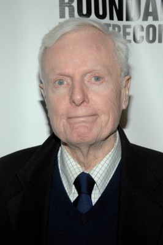

#3897 Blow Out - Der Tod löscht alle Spuren
Alternativ: Blow Out

 IMDB-Wertung: 7.4 / 10
IMDB-Wertung: 7.4 / 10  Metascore: 0
Metascore: 0 
Jack Terry verdient seinen Lebensunterhalt auf ungewöhnliche Weise: Er zeichnet Geräusche für Horrorfilme auf: Als er eines Nachts mit seinem Aufnahmegerät auf einer einsamen Brücke steht, wird er Zeuge eines Unfalls. Präsidentschaftskandidat George McRyan verunglückt tödlich mit seinem Auto. Doch Jacks Tonbänder erzählen eine andere Geschichte. War der Unfall in Wirklichkeit ein Attentat? Und welche Rolle spielt Sally, die mit McRyan im Wagen saß? Auf der Suche nach der Wahrheit landet Jack in seinem eigenen ganz realen Horrorfilm...
Jahr: 1981
Dauer: 107 Minuten
FSK: 16
Land: USA Studio: Filmways PicturesTonspuren:
Untertitel: Deutsch,
Auflösung: 720p (1280x536) Größe: 5181 MB
Genre: Thriller, Mystery
Regisseur:  Brian De Palma
Brian De Palma
Drehbuch: Daniel Speck
Soundtrack:
Darsteller:
 John Travolta als Jack Terry
John Travolta als Jack Terry Nancy Allen als Sally
Nancy Allen als Sally John Lithgow als Burke
John Lithgow als Burke Dennis Franz als Manny Karp
Dennis Franz als Manny Karp-  John McMartin als Lawrence Henry
 J. Patrick McNamara als Detective at Hospital
J. Patrick McNamara als Detective at Hospital- Robin Sherwood als Betty
 Tony Devon als Sailor's Friend
Tony Devon als Sailor's Friend- Bernie Rachelle als Ambulance Attendant
- Roberto Lombardi als Train Passenger , uncredited
- Peter Boyden als Sam
- Curt May als Donahue
- John Aquino als Detective Mackey
- Deborah Everton als Hooker
- Missy Cleveland als Coed Lover
- Roger Wilson als Coed Lover
- Lori-Nan Engler als Sue
- Cindy Manion als Dancing Coed
- Missy Crutchfield als Dancing Coed
- Marcy Bigelman als Ecstatic Coed
- Ann Kelly als Studious Coed
- Dean Bennett als Campus Guard
- John Coppolino Jr. als Maniac
- Archie Lang als Mixer
- Dave Roberts als Anchorman
- Claire Carter als Anchorwoman
- Maurice Copeland als Jack Manners
- John Hoffmeister als Governor McRyan
- David De Felice als Boy Lover
- Barbara Sigel als Girl Lover
- Thomas J. McCarthy als Policeman at Hospital
- Reginald M. Wallace als Policeman at Hospital
- Robert L. Penrose als Hospital Administrator
- Larry Woody als Doctor
- Dick McGarvin als TV Newscaster
- Michael Borghese als Newsdealer
- Rossana Fichera als Receptionist
- James Jeter als Film Lab Man
- Luddy Tramontana als Freddie Corso
- Sid Doherty als Cop in Car
- Milt Fields als Mobster
- Bud Seese als Corrupt Captain
- Maureen Sullivan als First Murder Victim
- Brian Corrigan als Cop at Karp's Office
- Elaine Filoon als Screamer
- Tim Choate als Sailor
- B.J. Cyrus als Sailor's Friend
- Dave DeAngelis als Sailor's Friend
- Thomas Finn als Sailor's Friend
- Henry Cohen als Ambulance Attendant
Datei: X:\1981\Blow Out - Der Tod löscht alle Spuren (1981, FSK16, 1280x536).mkv seit 29.06.2016
Festplatte: HD 1980-1986
 Es gibt insgesamt 33 Filme in der Gruppe '1981'
Es gibt insgesamt 33 Filme in der Gruppe '1981'